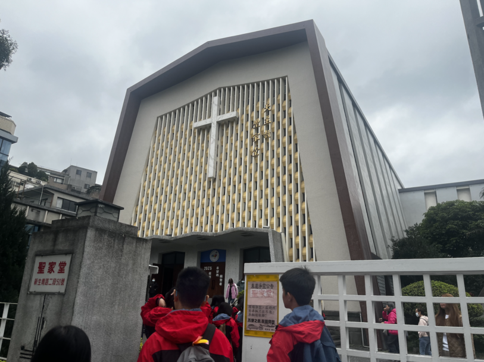
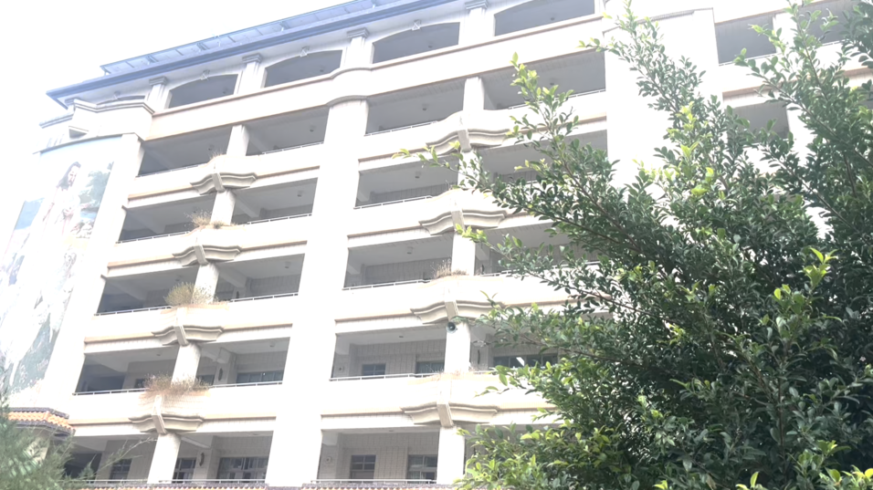

The Holy Catholic Family Church has many differences compared to the church in the students' school, Santa Laurensia. The church in Taiwan sang a little bit only, has no illustration of the twelve disciples of Jesus, and also offers mass in multiple languages. Meanwhile, the church of Saint Lawrence has statues of the twelve disciples of Jesus and has a lot more singing. Overall, the experience on going on the English mass in the Holy Catholic Family Church was phenomenal.

In here, the students did some community service with old people, where they played games with them, talked with them, and also a whole lot more activities. From this experience, the students achieved their goal to entertain and make the elders happy, which in a way follows what Jesus did by comforting other people.